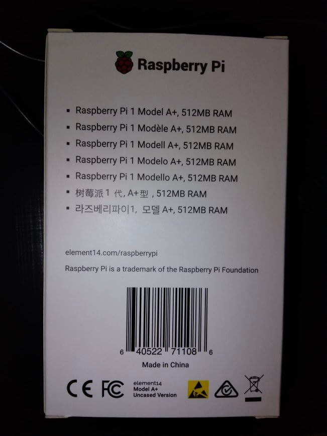

Ever since the first Raspberry Pi was released, back when I was an undergrad with no real use for it, I've wanted one. You see, the idea of learning Linux had always been in the back of my mind, and I had even tried reading Shotts' book a couple of years earlier.
If you're interested in Pi's, or in tech/hardware in general, you probably know of the current chip shortage. Unfortunately, it hit the Pi market hard, and scalpers (can we call them that?) have been selling the boards at exorbitant rates (well, they've put them on sale, and I hope they can't sell them). This is unfortunate, but it can't be helped for now. I went to a shop intending to get the last Pi 2 they had. I found they were also selling their Pi 3 sample, very cheap. However, one or two of the GPIO heads were bent, so eventually, I decided on just getting a Pi A+ (also cheap) instead! I took it home, but the next morning, to my dismay, I discovered that it has no network connectivity. I had forgotten that, or thought it would be the same as the Pi 2.

So it would seem I'm in a bind. However, solutions exist, and I have ordered an ethernet module, but it could take weeks to arrive. Until then, I shall just focus on learning and applying my knowledge. Truth be told, I'm in no hurry to "publish" anything I do/learn/write to the internet, anyway. This is a great opportunity to learn how to work with this stuff, and I'm sure I'll feel the great Joy of Tinkering. I shall share more news as they come up.